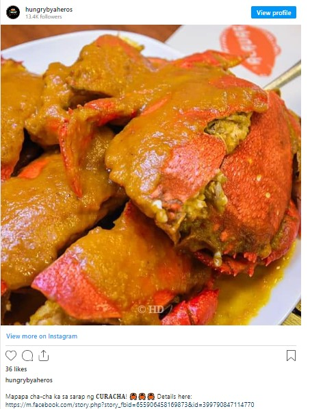
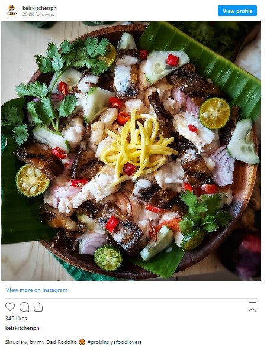
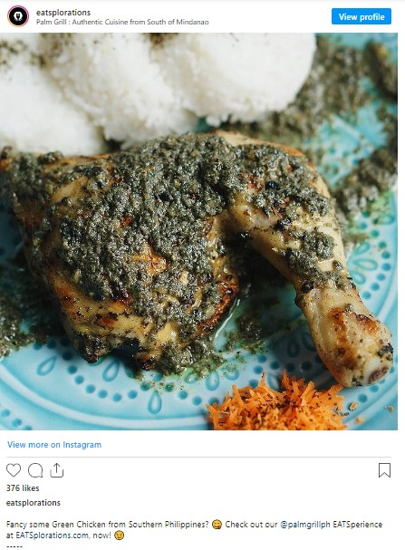
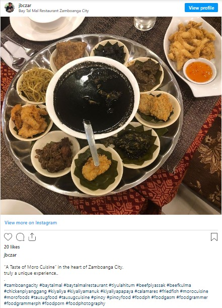
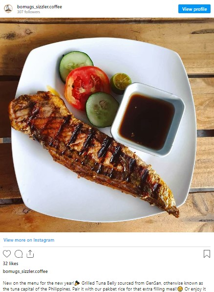
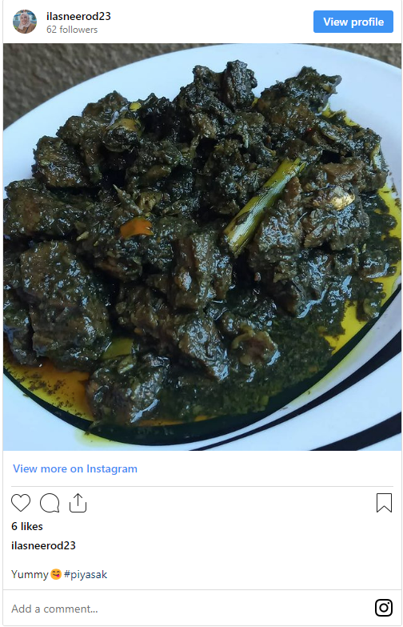
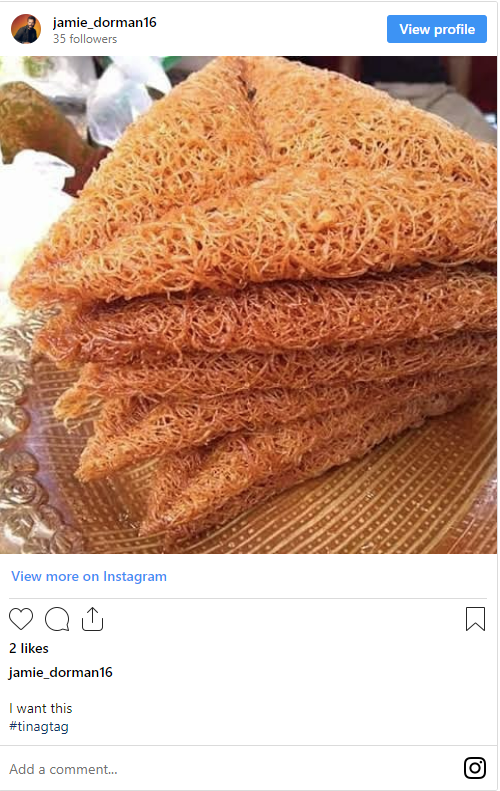
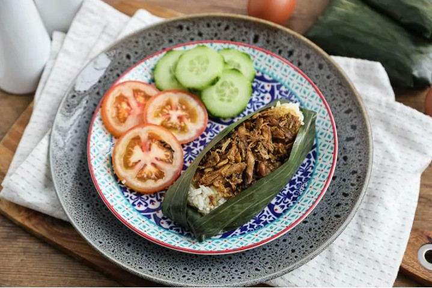
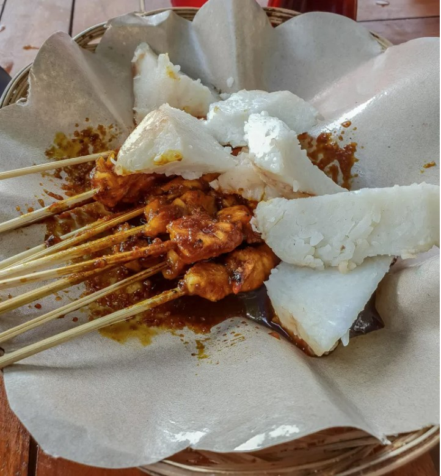
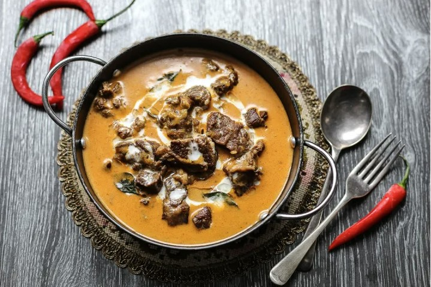

Mindanao cuisine is very distinct in terms of flavor compared to the rest of the Philippines.
Dishes in Mindanao are renowned for their use of coconut milk and spices like chile, onion, and ginger.
They are heavily inspired by the Spanish and Malay flavors of neighboring Southeast Asian countries.
The abundance of fresh seafood and tropical fruits also plays a large role in the regional cuisine.
Each major city and region on this, the second-largest island in the nation, has a distinct specialization.
Here are a some of the well-known dishes that tourists frequently connect with Mindanao.
Curacha

Photo by hungrybyaheros on Instagram
Curacha is the local Chavacano name given to a species of deep-sea crab commonly found in the waters of Sulu province and waters surrounding Zamboanga City,
for more info, click me.
Main Ingredients:
4 pieces curacha crab (about a kilo)
300ml coconut milk
4 tablespoon oyster sauce
1 bulb garlic (crushed)
1 thumb-size ginger (grated)
1/2 teaspoon freshly ground pepper
2 teaspoon rock salt
red chili pepper (optional)
Sinuglaw

Photo by kelskitchenph on Instagram
Sinuglaw is a popular appetizer that combines grilled pork (sinugba) and raw marinated fish (kinilaw),
for more info, click me.
Main Ingredients:
1 lb Inihaw na liempo
1 lb fresh tuna meat
2 cups cucumber
1 1/4 cup vinegar
1 medium sized red onion
2 tablespoons ginger
4 pieces finger chilies
1 piece lemon
4 to 6 pieces Thai or Bird’s eye chili
1 teaspoon salt
Chicken Piyanggang

Photo by eatsplorations on Instagram
Chicken Piyanggangis a Tausug dish that consists of chicken stewed with blackened coconut meat and the Maranao condiment called palapa (ginger, chilies and sakurab) until tender and then grilled,
for more info, click me.
Main Ingredients:
large bone-in chicken thighs, whole coconuts
For the Spice Paste:
2 heaping tablespoons burnt coconut meat, ground with a spoon or in a pestle
4 large cloves garlic, peeled and diced
¼ small red onion, peeled and rough-chopped
1 ½ inch knob of ginger, peeled and rough-chopped
1 ½ inch piece fresh turmeric, peeled and rough-chopped, or 1 ½ teaspoons ground turmeric
1 green onion, trimmed and sliced crosswise
1 lemongrass stalk, lower white part only, trimmed and sliced crosswise
2 Thai bird chiles, stemmed and rough-chopped (optional)
3 tablespoons vegetable oil
For Coconut Milk Basting Sauce
cups Remaining spice paste
1 ½ cups unsweetened coconut milk
1 tablespoon vegetable oil
Salt, to taste
Tiyula Itum

Photo by jbczar on Instagram
Tiyulah Itum is another dish that originates from Sulu. This black soup of slow cooked beef or chicken in burnt coconut broth is usually served during special occasions like Muslim weddings and is known to be one of the dishes served to Royalties,
for more info, click me.
Main Ingredients:
1 kg beef brisket, cubed
1/2 cup grated coconut meat
4 stalks lemongrass, white section only pounded
3 birds eye chillies, finely chopped
4 cups beef stock
1 thumb sized ginger, thinly sliced
1/2 thumb sized turmeric, thinly sliced
6 cloves garlic, minced
3 pcs shallots, thinly sliced
salt
freshly ground black pepper
oil
Tuna

Photo by bomugs_sizzler.coffee on Instagram
General Santos City or Gensan is popularly known as the “Tuna Capital of the Philippines.” No tourist visits GenSan without indulging in fresh tuna or tuna delicacies served in various restaurants,
for more info, click me.
Main Ingredients:
4 lbs. Tuna belly
1 cup soy sauce
2 tablespoons sugar
4 pieces calamansi
¼ teaspoon ground black pepper
Piyassak

Photo by ilasneerod23 on Instagram
Another burnt coconut wonder, it is the foie gras of the Tausug cuisine, instead of goose liver this uses beef liver instead with lots of spices,
for more info, click me.
Main Ingredients:
1 kg. of chicken or beef liver
Onion - 1 pc.
Ginger - 2 thumbs
Garlic - 5 cloves
Black pepper
Lemongrass - 2 pcs.
Sugar - 1/2 tablespoon
Cooking oil
Coconut milk - 500 ml
Burned coconut - 1/2
MSG (optional)
Tinagtag

Photo by jamie_dorman16 on Instagram
A famous delicacy among Maguindanaons and it is made of ground rice and sugar, mixed with a little bit of water. Locals say this is best eaten with coffee and coco milk,
for more info, click me.
Main Ingredients:
2-1/2 c water
1 kg brown sugar
1 ganta rice
1/4 gal edible oil
Pastil

Photo by angsarap.net
If Luzon has binalot then Mindanao has this, Pastil, another popular breakfast popular breakfast prepared with steamed rice topped with shredded chicken then wrapped in banana leaf,
for more info, click me.
Main Ingredients:
1 kilo of Chicken
Half an onion, thinly sliced
½ cup Cooking oil
¼ cup of Soy Sauce
¾ cup Vinegar
½ tsp. Black Pepper
Salt to taste
4 Cups of White Rice
Banana Leaves for wrapping
Satti

Photo by angsarap.net
It’s a popular breakfast item in Zamboanga made with small bits of grilled meat, served with rice with lots of sauce. Move over tapsilog!,
for more info, click me.
Main Ingredients:
½ cup siling labuyo or catumbal
5 thumb size ginger pieces
4 thumb size turmeric
1 fist size onion bulb
6 leaves of oregano, or 1 tsp oregano powder
2 tbsp oil
½ tsp shrimp paste
1 tomato
½ cup corn starch
½ cup flour
1 ½ cup sugar
1 tbsp salt
15 g Anito powder
3-4 chicken cubes
¼ cup coconut milk
1 tsp peanut butter
2 tsp curry powder
2 inches taro root
Kulma(Beef in Coconut Milk)

Photo by angsarap.net
What happens when Beef Curry and Kare Kare have babies then you have this, Kulma, a delicious beef curry cooked in coconut milk, peanuts, tomato sauce and curry spices,
for more info, click me.
Main Ingredients:
8 cups water
1 kilogram beef cubes pochero cut
4 cloves Garlic whole
1 tespoon Salt
1 teaspoon black peppercorns
2 stalks Lemongrass
1 medium white onion quartered
2 cloves Garlic chopped
10 pieces curry leaves or 1 tablespoon curry powder